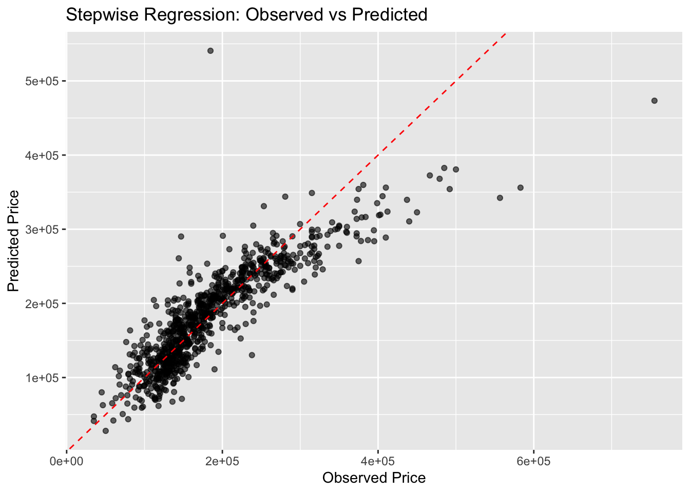
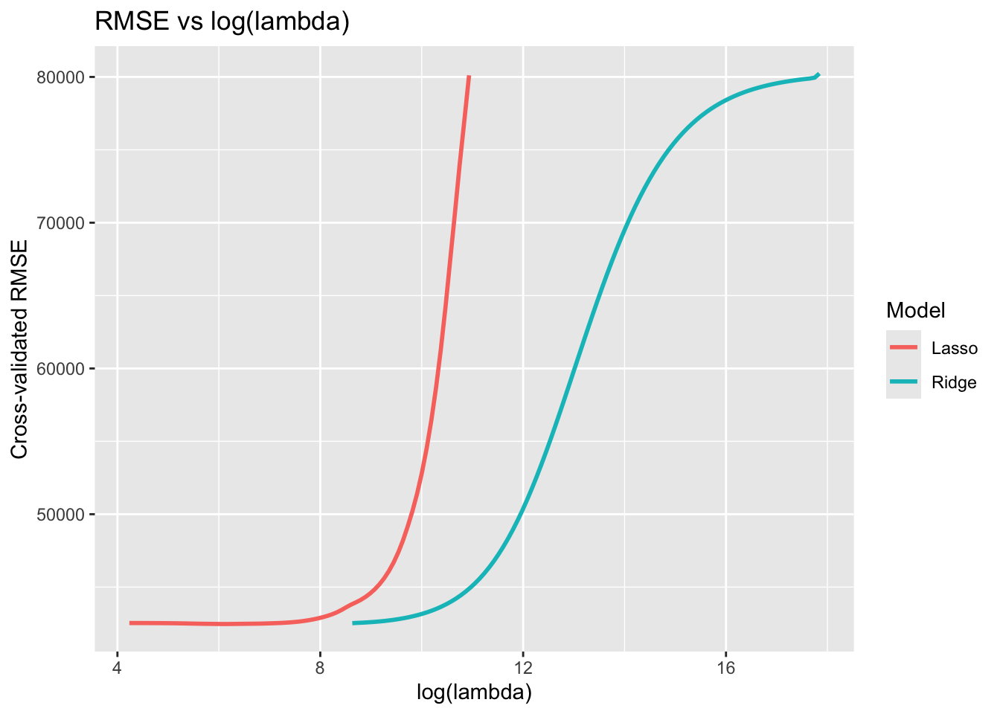
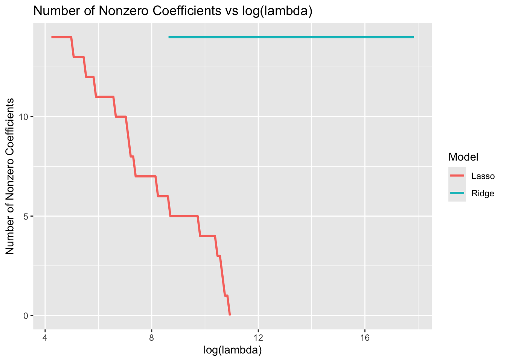
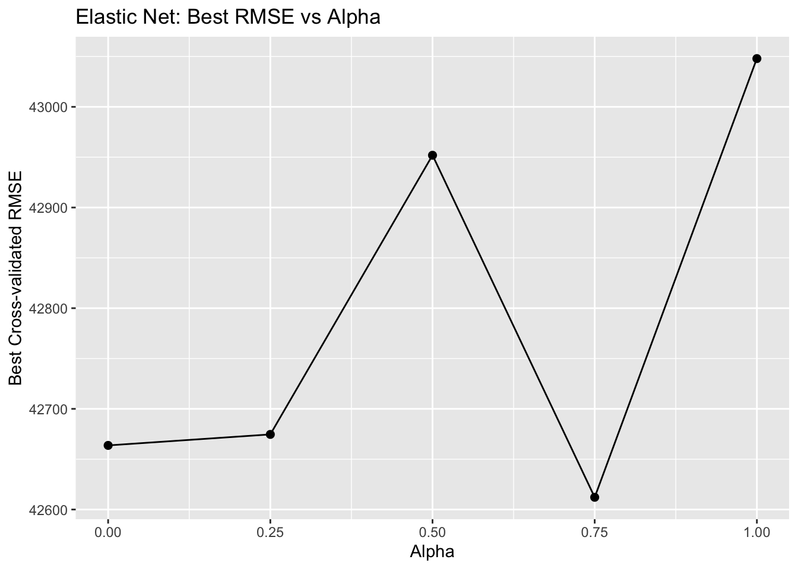
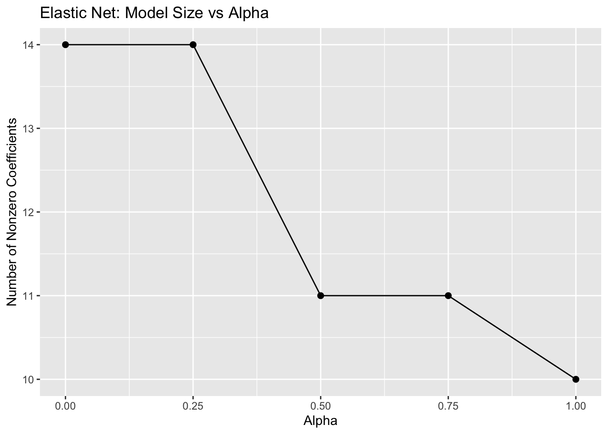

In this section, we’ll use the Ames Housing dataset to demonstrate model selection and regularization.
We’ll cover:
Splitting data into training and testing sets
Performing stepwise regression with cross-validation
Running Ridge and Lasso regression, and visualizing how λ affects RMSE and model complexity
Exploring Elastic Net, varying α to balance Ridge and Lasso
Comparing all models on the test set
2.2 Step 0: Setup and Data Preparation
We’ll use a reduced set of variables for speed and clarity.
Code
# Suppress messages and warnings globallyknitr::opts_chunk$set(echo =TRUE, message =FALSE, warning =FALSE)library(tidyverse)library(caret)library(glmnet)library(AmesHousing)library(GGally)set.seed(123)# Load data and split into 70% training, 30% testingames <-make_ordinal_ames() %>%mutate(id =row_number())train <- ames %>%sample_frac(0.7)test <-anti_join(ames, train, by ="id")# Select a manageable subset of predictorskeep <-c("Sale_Price", "Bedroom_AbvGr", "Year_Built", "Mo_Sold", "Lot_Area","Street", "Central_Air", "First_Flr_SF", "Second_Flr_SF", "Full_Bath","Half_Bath", "Fireplaces", "Garage_Area", "Gr_Liv_Area", "TotRms_AbvGrd")train <- train %>%select(all_of(keep))test <- test %>%select(all_of(keep))# Convert categorical variables to factorstrain <- train %>%mutate(across(c(Street, Central_Air), as.factor))test <- test %>%mutate(across(c(Street, Central_Air), as.factor))
2.3 Step 1: Stepwise Regression with 10-Fold Cross Validation
We’ll use backward stepwise regression as a traditional benchmark.
Code
ctrl <-trainControl(method ="cv", number =10)step_model <-train( Sale_Price ~ ., data = train,method ="lmStepAIC",trControl = ctrl,trace =FALSE,direction ="backward")# Evaluate on the test setstep_pred <-predict(step_model, newdata = test)step_perf <-postResample(step_pred, test$Sale_Price)step_perf
RMSE Rsquared MAE
3.820776e+04 7.670269e-01 2.613098e+04
Code
# Visualize predicted vs observedggplot(data.frame(obs = test$Sale_Price, pred = step_pred), aes(obs, pred)) +geom_point(alpha =0.6) +geom_abline(linetype ="dashed", color ="red") +labs(title ="Stepwise Regression: Observed vs Predicted",x ="Observed Price", y ="Predicted Price")

Note:
Stepwise regression is intuitive and fast, but it can be unstable.
Stepwise regression (forward, backward, or both) selects predictors one at a time based on how much they improve a criterion (like AIC or adjusted R²).
2.4 Step 2: Ridge and Lasso Regression
Ridge and Lasso both shrink coefficients, but in different ways: - Ridge shrinks all coefficients toward zero. - Lasso can set some coefficients exactly to zero, performing variable selection.
build_path_df <-function(cvfit, label) { fit <- cvfit$glmnet.fittibble(lambda = fit$lambda,log_lambda =log(fit$lambda),RMSE =sqrt(cvfit$cvm),nonzero =colSums(abs(fit$beta) >0),Model = label )}ridge_df <-build_path_df(cv_ridge, "Ridge")lasso_df <-build_path_df(cv_lasso, "Lasso")df <-bind_rows(ridge_df, lasso_df)ggplot(df, aes(log_lambda, RMSE, color = Model)) +geom_line(size =1) +labs(title ="RMSE vs log(lambda)", y ="Cross-validated RMSE", x ="log(lambda)")

Code
ggplot(df, aes(log_lambda, nonzero, color = Model)) +geom_line(size =1) +labs(title ="Number of Nonzero Coefficients vs log(lambda)",y ="Number of Nonzero Coefficients", x ="log(lambda)")

Note:
- Increasing λ increases regularization.
- Ridge never eliminates variables, Lasso can.
- There’s a sweet spot where RMSE is minimized.
2.5 Step 3: Elastic Net (Balancing Ridge and Lasso)
Elastic Net introduces α to control the mix between Ridge (α = 0) and Lasso (α = 1).
Code
alpha_grid <-seq(0, 1, by =0.25)elastic_results <-map_df(alpha_grid, function(a) { cv_fit <-cv.glmnet(x_train, y_train, alpha = a, nfolds =10)tibble(alpha = a,best_lambda = cv_fit$lambda.min,best_RMSE =sqrt(min(cv_fit$cvm)),nonzero =sum(abs(coef(cv_fit, s ="lambda.min")[-1]) >0) )})elastic_results
ggplot(elastic_results, aes(alpha, best_RMSE)) +geom_line() +geom_point(size =2) +labs(title ="Elastic Net: Best RMSE vs Alpha",y ="Best Cross-validated RMSE", x ="Alpha")

Code
ggplot(elastic_results, aes(alpha, nonzero)) +geom_line() +geom_point(size =2) +labs(title ="Elastic Net: Model Size vs Alpha",y ="Number of Nonzero Coefficients", x ="Alpha")

Note:
Elastic Net combines the strengths of Ridge and Lasso: - Ridge for stability. - Lasso for sparsity. - Often performs best at intermediate α values.
2.6 Step 4: Comparing All Models on the Test Set
We’ll compare Stepwise, Ridge, Lasso, and the best Elastic Net.